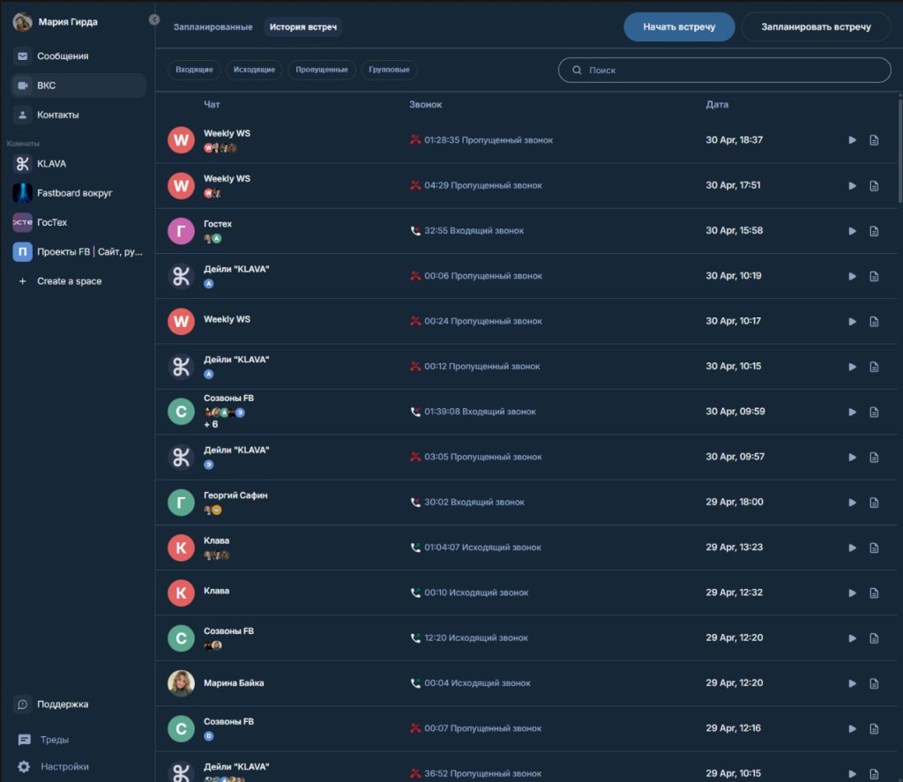

Единый сайт-навигатор по инициативам: краткий функционал, бизнес-ценность и ссылки на два документа по каждой инициативе: «для команды» и «для GPT».
Волны внедрения
W1 (май–июнь) ТЗ 1, ТЗ 5, ТЗ 7 — быстрые UX-улучшения с максимальным эффектом на ежедневную работу.
W2 (июль–август) ТЗ 2/3, ТЗ 6, ТЗ 8 — ядро сценариев коммуникации и командной координации.
W3 (сентябрь–октябрь) ТЗ 9 — крупный модуль «Доски» и связанная инфраструктура.
W4 (ноябрь+) Идеи 10–13 — запуск по результатам discovery и приоритизации.
ТЗ 1готово
W1 • быстрые победы
Индикатор источника уведомлений ВКС
Явная маркировка, из какого контекста пришло оповещение о звонке/конференции.
Ценность: меньше пропущенных вызовов и путаницы у пользователей.
Ресурсы и трудозатраты
MVPAI-first: 12 ч • Классика: 32 ч
FullAI-first: 20 ч • Классика: 56 ч
ТЗ 2/3прототип
W2 • ядро коммуникаций
Центр встреч и UX ВКС
Раздел «ВКС» с вкладками, планированием встреч и единым модальным сценарием.
Ценность: единый путь к запуску встреч, выше скорость работы команд.


Ресурсы и трудозатраты
MVPAI-first: 48 ч • Классика: 140 ч
FullAI-first: 90 ч • Классика: 280 ч
ТЗ 5прототип
W1 • быстрые победы
Чат-лист как в Telegram
Превью последнего сообщения и формат времени по давности диалога.
Ценность: быстрее triage чатов, выше скорость ответа.
Ресурсы и трудозатраты
MVPAI-first: 20 ч • Классика: 52 ч
FullAI-first: 34 ч • Классика: 92 ч
ТЗ 6прототип
W2 • ядро коммуникаций
Мультиаккаунт как в Telegram
Переключение между аккаунтами без релогина, счётчики unread/mentions.
Ценность: удержание power users и пользователей из нескольких контуров.
Ресурсы и трудозатраты
MVPAI-first: 44 ч • Классика: 128 ч
FullAI-first: 86 ч • Классика: 248 ч
ТЗ 7прототип
W1 • быстрые победы
Личные статусы
Статус с emoji/текстом/сроком жизни в user menu и профиле пользователя.
Ценность: прозрачная доступность сотрудников, меньше лишних пингов.
Ресурсы и трудозатраты
MVPAI-first: 24 ч • Классика: 64 ч
FullAI-first: 40 ч • Классика: 108 ч
ТЗ 8прототип
W2 • ядро коммуникаций
Задачи с наблюдателями
Раздел задач, вкладка «Наблюдаю», deep-link, создание из composer.
Ценность: контроль исполнения без потери контекста в коммуникациях.
Ресурсы и трудозатраты
MVPAI-first: 60 ч • Классика: 176 ч
FullAI-first: 120 ч • Классика: 340 ч
ТЗ 9прототип
W3 • масштабирование платформы
Доски (аналог Miro)
Список досок, canvas, инструменты, комментарии, голосования, импорт, аудит.
Ценность: единая коллаборация для сессий/брейнштормов внутри платформы.
Ресурсы и трудозатраты
MVPAI-first: 140 ч • Классика: 420 ч
FullAI-first: 320 ч • Классика: 960 ч
Идея 10идея
W4 • backlog и гипотезы
Уведомить, когда пользователь в сети
Подписка на online-статус контакта и уведомление с CTA «Чат/Позвонить».
Ценность: ускорение реакции на доступность ключевых людей.
Ресурсы и трудозатраты
MVPAI-first: 26 ч • Классика: 74 ч
FullAI-first: 48 ч • Классика: 138 ч
Идея 11идея
W4 • backlog и гипотезы
Проверка орфографии
Подсветка ошибок в composer + предложения исправлений.
Ценность: качество и скорость деловой переписки.
Ресурсы и трудозатраты
MVPAI-first: 36 ч • Классика: 104 ч
FullAI-first: 80 ч • Классика: 228 ч
Идея 12идея
W4 • backlog и гипотезы
Управление раскладкой конференции
Drag-and-drop окон, пин приоритетного, авто-режимы раскладки.
Ценность: более качественные встречи и удобство модерации.
Ресурсы и трудозатраты
MVPAI-first: 52 ч • Классика: 148 ч
FullAI-first: 96 ч • Классика: 284 ч
Идея 13идея
W4 • backlog и гипотезы
Интерфейс протоколиста
Таймкоды разговора и плеер для быстрых переходов по записи встречи.
Ценность: ускорение подготовки протоколов и пост-митинг материалов.
Ресурсы и трудозатраты
MVPAI-first: 58 ч • Классика: 168 ч
FullAI-first: 112 ч • Классика: 332 ч